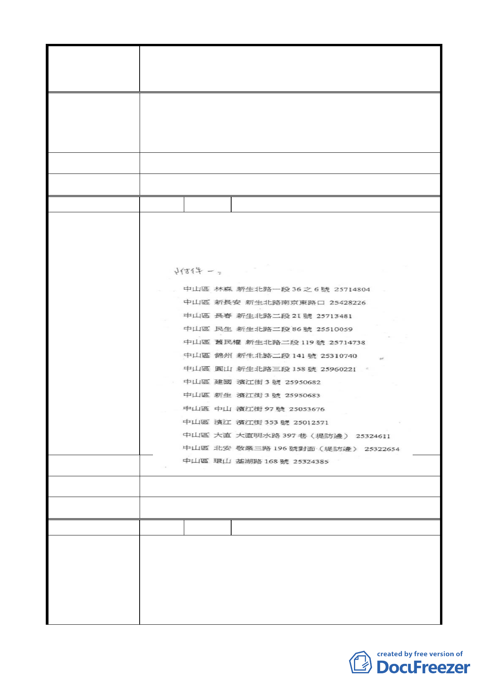

變更臺北市中山區北安段三小段 297-1 地號等20 筆高職
案 名 用地為機關用地（供國防部國防專區使用）及抽水站用地主
要計畫案
泥應可以改善。
2. 國防部應安置居民搬遷，而不影響居民權利。
3. 此地近鄰學區及國防專區，就不要蓋抽水站全部都給國
防部專區使用。
市 府 回 覆 意 見 同編號 5（二）、（三）市府回應說明。
大 會 決 議 同編號 5 決議。
編 號 13 陳情人 劉校榕
因員山子分洪，基隆河已不太淹水，在不太淹水區增設抽水
站，沒有急迫的需求且不免讓人覺得浪費公帑。如附件一。
陳情理由
建 議 辦 法 定期多疏通水道及排水溝避免阻塞。
市 府 回 覆 意 見 同編號 5（二）市府回應說明。
大 會 決 議 同編號 5 決議。
編 號 14 陳情人 盧燕燕
抽水站用地：
1. 依其說明資料，民國87年10月15日瑞伯颱風造成北安
陳情理由
路、明水路口積水深度達100公分、民國93年9月11日暴
雨造成北安路忠烈祠一帶積水50公分，以及民國97年9月
12日辛樂克颱風造成圓山飯店下方隧道路及北安公園一
帶積水50公分，這些地點均是離此地點低處（基隆河下
- 13 -